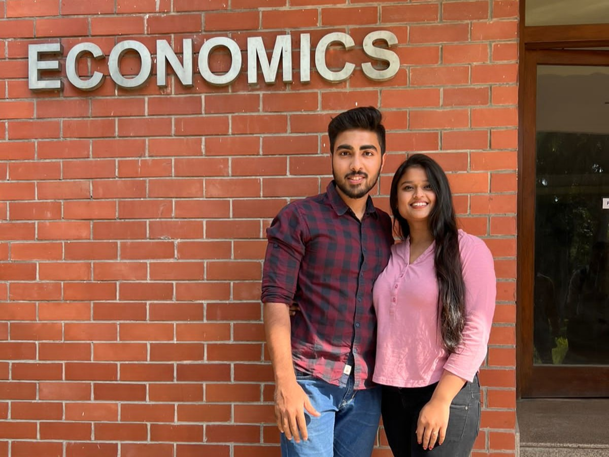
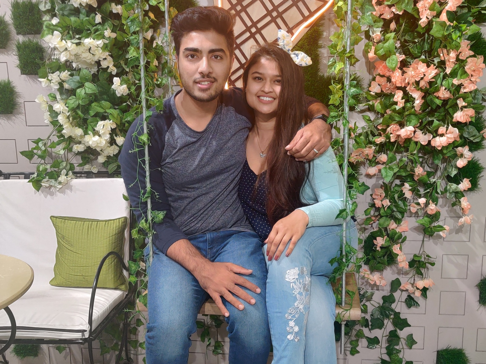

A Symphony of Distances: Our Story
A journey of hearts coming together

Vishal & Arpita
They say economists analyze patterns, but nothing could have predicted the complex, beautiful trajectory that began in August 2019. Within the revered walls of the Delhi School of Economics, two worlds quietly aligned. He was the quintessential Delhi boy, occupying the front of the lecture hall, sharp and focused. She was the girl from UP, seeking knowledge, seated quietly at the back.
December 2020: The Turning Point
Friendship blossomed instantly, fueled by shared intellect and laughter. They became inseparable friends, their bond growing deeper, their conversations longer, all while the unspoken truth of their love grew quietly beneath the surface.
The dam broke on December 2nd, 2020. He finally summoned the courage to speak his heart. The subsequent forty-eight hours were a silent internal battle for her against feelings too potent to ignore.
On December 4th, 2020, amidst the movement of Delhi traffic, she turned to him and finally said 'Yes'.
Love Across Miles
That year in Delhi was a sun-drenched season of shared dreams and indelible memories. But love, they soon learned, would be tested by geography. In December 2021, she moved to Bangalore for work, marking the start of their long-distance journey. They adjusted to the miles, unaware that the distance was about to stretch across an ocean.
For years, their romance was measured in time zones, late-night video calls, and the unwavering conviction that they were meant for each other. Time, rather than fraying their connection, only revealed its unbreakable strength. They knew, regardless of where their paths led, they had to walk them together.
A Promise Kept
On December 2nd, 2025—exactly five years after his first confession—they got engaged. And on December 4th, 2026, precisely six years to the day she said 'Yes', Vishal and Arpita will marry.
For now, their home remains the quiet spaces between heartbeats, spanning the vastness between Delhi and Pittsburgh. They will endure the distance, whether measured in months or years, fueled by the certainty that no matter how far they are, they are always, invariably, coming home to one another.
"Love is not about finding the perfect person, but about seeing an imperfect person perfectly."
